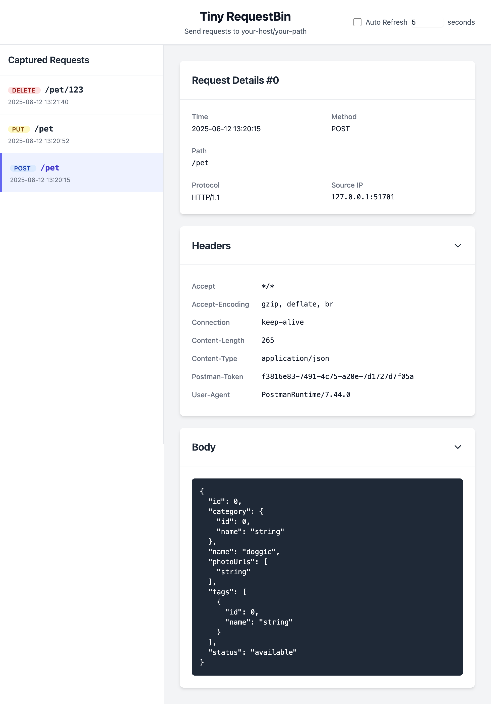

最近整理自己的开源项目时，我重新看了一遍 tiny-requestbin 的 GitHub 页面，发现它已经不只是一个“能收请求的小工具”，而是一个非常适合本地调试、Webhook 联调和临时排查 HTTP 请求问题的轻量级工具。这个项目使用 Go 编写，目标非常明确：尽量少的依赖、尽量快地启动、尽量直观地查看收到的请求内容。
如果你经常需要验证第三方回调、调试自建服务的入站请求，或者只是想临时抓一把 HTTP 请求看看内容，那它应该会很顺手。
这个项目是做什么的
tiny-requestbin 是一个 轻量级 HTTP 请求检查与调试工具。启动之后，它会捕获发往当前服务的 HTTP 请求，并把这些请求展示出来，方便开发者查看：
- 请求方法
- 请求路径
- 请求头
- 请求体
- 以及整体请求的详细内容
项目当前的几个核心特点也在 README 里写得很清楚：
- 轻量且快速：实现简单，依赖极少
- 请求检查：可以查看传入 HTTP 请求的详细信息
- Web 界面：通过浏览器查看捕获的请求
- CLI 模式：也可以直接在终端打印请求内容
- 本地运行：所有数据都留在本机，无需依赖外部服务
我自己很喜欢这类“功能边界清晰”的工具：不追求大而全，而是把“看请求”这件事做好。
安装方式很全
tiny-requestbin 的仓库首页提供了几种常见安装方式，基本覆盖了本地调试和服务部署的主要场景。
1. Docker 方式
如果只是想快速跑起来，README 推荐直接使用 Docker：
1 | docker run -p 8282:8282 knktc/tiny-requestbin |
也可以带上自定义参数运行，例如自定义监听地址、端口和最大保存请求数：
1 | docker run -p 8282:8282 knktc/tiny-requestbin -port 8282 -listen 0.0.0.0 -max 1000 |
此外仓库里也提供了 docker-compose.yml，所以用 docker-compose up -d 也能直接启动。
2. Helm 安装
如果你有 Kubernetes 环境，项目还提供了 Helm Chart，可以直接安装：
1 | helm install my-requestbin helm/tiny-requestbin/ |
README 里还给了自定义 config.max、service.type 和启用 HTTPRoute 的示例，对 K8s 用户来说很友好。
3. go install
既然它本身就是 Go 项目，直接安装也很自然：
1 | go install github.com/knktc/tiny-requestbin@latest |
4. 从源码构建
如果你想自己编译，也很简单：
1 | git clone https://github.com/knktc/tiny-requestbin.git |
怎么使用
项目默认启动方式非常直接：
1 | tiny-requestbin |
默认参数如下：
-port：监听端口，默认8282-listen：监听地址，默认127.0.0.1-max：最大保存请求数量，默认100-cli：是否启用 CLI 输出模式，默认false
比如下面这个命令，会把服务监听在 0.0.0.0:9000，最多保存 1000 条请求，同时把请求内容打印到终端：
1 | tiny-requestbin -port 9000 -listen 0.0.0.0 -max 1000 -cli |
它的工作流程也很简单：
- 启动服务
- 把请求发到
http://[监听地址]:[端口]/任意路径 - 在浏览器访问根路径查看已捕获请求
- 如果开启了
-cli，终端里也会同步输出请求内容
这意味着它既适合本地临时排查，也很适合作为内网环境中的一个“小型请求接收站”。
两种使用体验：终端和 Web
仓库首页给了两张截图，我也顺手放到这篇文章里，方便直接感受它的实际效果。
CLI 模式截图
启用 -cli 后，收到的 HTTP 请求会直接以格式化后的方式打印在终端里：

这个模式特别适合在服务器、容器或远程终端里快速观察请求，不需要额外打开浏览器。
Web 界面截图
如果更喜欢图形化浏览方式，可以直接访问 Web 页面查看历史请求：

从截图来看，界面风格非常克制，重点就是把请求内容清楚地展示出来，没有多余干扰。
适合哪些场景
结合仓库首页信息，我觉得 tiny-requestbin 很适合下面这些场景：
- 调试第三方平台的 Webhook 回调
- 验证某个服务到底发了什么 HTTP 请求
- 本地开发时快速搭一个请求接收端
- 在容器/Kubernetes 环境中临时观察请求流量
- 在终端环境下通过
-cli模式直接查看请求细节
尤其是它强调 Local Only，所有数据都保留在本机，这一点对很多内部调试场景来说非常安心。
额外值得一提的几点
GitHub 页面里还有几个我觉得挺加分的信息：
- 项目镜像支持 多架构，包括
linux/amd64和linux/arm64 - 多架构镜像会通过 GitHub Actions 自动构建发布
- 仓库里同时提供了 Docker、Helm、源码构建几种入口
- 项目采用 MIT License，使用和二次分发都比较友好
另外，README 里还提到这个项目最开始由 Gemini 起步，后续由 GitHub Copilot 持续修改，这一点也挺符合这个项目本身“轻量、直接、快速迭代”的气质。
最后
如果你正好在找一个 Go 写的、轻量、可本地运行、同时支持 Web 和 CLI 的 HTTP 请求调试工具，那我觉得 tiny-requestbin 值得试一试。
项目地址：
欢迎去点个 star，也欢迎提 Issue 或 PR，一起把这个小工具打磨得更顺手。